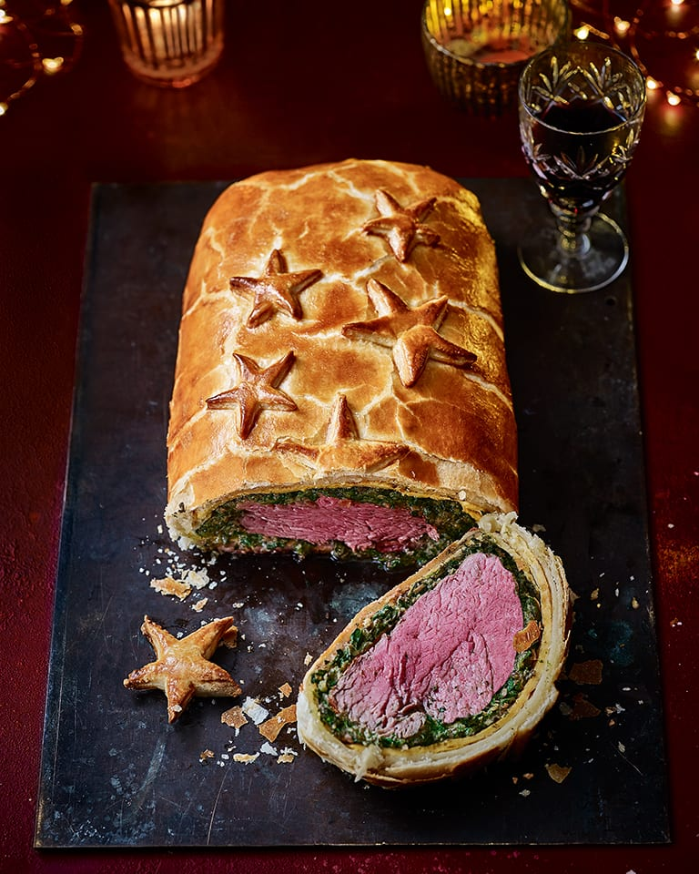

Beef Wellington

Beef Wellington is a steak dish of English origin, made out of fillet steak coated with pâté (often pâté de foie gras) and duxelles, wrapped in puff pastry, then baked. Some recipes include wrapping the coated meat in a crêpe or parma ham to retain the moisture and prevent it from making the pastry soggy.
A whole tenderloin may be wrapped and baked, and then sliced for serving, or the tenderloin may be sliced into individual portions prior to wrapping and baking.
Ingredients
- 2 ½ pounds beef tenderloin
- 2 tablespoons butter, softened
- 2 tablespoons butter
- 1 onion, chopped
- ½ cup sliced fresh mushrooms
- 2 ounces liver pate
- 2 tablespoons butter, softened
- salt and pepper to taste
- 1 (17.5 ounce) package frozen puff pastry, thawed
- 1 egg yolk, beaten
- 1 (10.5 ounce) can beef broth
- 2 tablespoons red wine
Steps
- Preheat oven to 425 degrees F (220 degrees C). Place beef in a small baking dish, and spread with 2 tablespoons softened butter. Bake for 10 to 15 minutes, or until browned. Remove from pan, and allow to cool completely. Reserve pan juices.
- Melt 2 tablespoons butter in a skillet over medium heat. Saute onion and mushrooms in butter for 5 minutes. Remove from heat, and let cool.
- Mix together pate and 2 tablespoons softened butter, and season with salt and pepper. Spread pate over beef. Top with onion and mushroom mixture.
- Roll out the puff pastry dough, and place beef in the center. Fold up, and seal all the edges, making sure the seams are not too thick. Place beef in a 9x13 inch baking dish, cut a few slits in the top of the dough, and brush with egg yolk.
- Bake at 450 degrees F (230 degrees C) for 10 minutes, then reduce heat to 425 degrees F (220 degrees C) for 10 to 15 more minutes, or until pastry is a rich, golden brown. Set aside, and keep warm.
- Place all reserved juices in a small saucepan over high heat. Stir in beef stock and red wine; boil for 10 to 15 minutes, or until slightly reduced. Strain, and serve with beef.